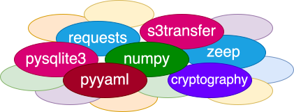
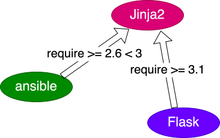

## Snakes Are My New Favourite A presentation about Python --- But before all that ## Trans Rights are Human Rights! It needs to be said even louder now --- # Scripting --- ## Different circumstances * one-off data helpers * regular task workers * team helpers * chat bots * ... --- * Shell? * fun and whimsy, YMMV * Ruby? * rather obscure, not in base systems * Perl? * `$_ =~ /^[^\d-]+?.*,([^,]+),.*;$/;` 🤪 --- ## Python ```python for result, count in get_summaries(): if "success" in result: total += current_count else: failures += 1 ``` --- ## Nifty built-in utilities ```bash # serve $PWD on http://localhost:8000 ? $ python -m http.server # make json readable $ cat /tmp/large.json | python -m json.tool | less --- ## Very natural API integration ```python import requests # request and decode JSON data r = requests.get("https://wttr.in/?format=j2") data = r.json() # now work with data print("Feels like {} °C outside".format( data["current_condition"][0]["FeelsLikeC"])) ```


"Dependency hell"
## Not much of an issue anymore ```bash [1] felix@deb01:~/testenv$ pip install ansible==10.0 error: externally-managed-environment × This environment is externally managed ╰─> To install Python packages system-wide, try apt install python3-xyz, where xyz is the package you are trying to install. If you wish to install a non-Debian-packaged Python package, create a virtual environment using python3 -m venv path/to/venv. ``` --- ## Basic virtual environment 1. create virtual env ```bash $ virtualenv /tmp/venv ``` 2. activate it for this shell ```bash $ . /tmp/venv/bin/activate ``` 3. install modules in the env ```bash (venv) $ pip install ansible==10.7.0 (venv) $ ansible --version ansible [core 2.17.11] ``` --- ## More streamlined alternatives * pyenv * pipsi * pipx --- ## Let your dependencies travel in git My favourite: pipenv ```bash [1] $ pipenv install flask ``` ```bash [1] $ cat Pipfile [[source]] url = "https://pypi.org/simple" verify_ssl = true name = "pypi" [packages] flask = "*" [dev-packages] [requires] python_version = "3.11" ``` --- ## Let your dependencies travel in git My favourite: pipenv ```bash [1-2,8-9] $ pipenv install flask ``` ```bash [1,7-8] $ cat Pipfile [[source]] url = "https://pypi.org/simple" verify_ssl = true name = "pypi" [packages] flask = "*" [dev-packages] [requires] python_version = "3.11" --- ```bash [1,15] $ pipenv run pip list Package Version ------------ ------- blinker 1.9.0 click 8.1.8 Flask 3.1.0 itsdangerous 2.2.0 Jinja2 3.1.6 MarkupSafe 3.0.2 pip 23.0.1 setuptools 66.1.1 Werkzeug 3.1.3 wheel 0.38.4 $ pipenv run flask run -app demo_app --- ### The virtualenv is specific to each Pipfile! ```bash [1,5] ~/testenv$ pwd && pipenv --venv /home/felix/testenv /home/felix/.local/share/virtualenvs/testenv-2KEFYwlv ~/staging-code$ pwd && pipenv --venv /home/felix/staging-code /home/felix/.local/share/virtualenvs/staging-code-FZb6lRtC --- ## From pipenv to production 1. create requirements.txt for virtualenv ```bash $ pipenv requirements > requirements.txt ``` 2. deploy explicit venv e.g. with Ansible ```yaml - name: Create virtual environment ansible.builtin.pip: virtualenv: "{{ install_dir }}/venv" requirements: "{{ install_dir }}/requirements.txt" --- ## Maintaining the virtualenv is now part of each new deployment 🛑 Dependency Hell is temporarily closed. 🛑 --- I have been Felix. 🐘 [@felixf@chaos.social](https://chaos.social/@felixf) 🦋 [@felix-frank.net](https://bsky.app/profile/felix-frank.net) Let me know about your favourite scripting approaches 🌱